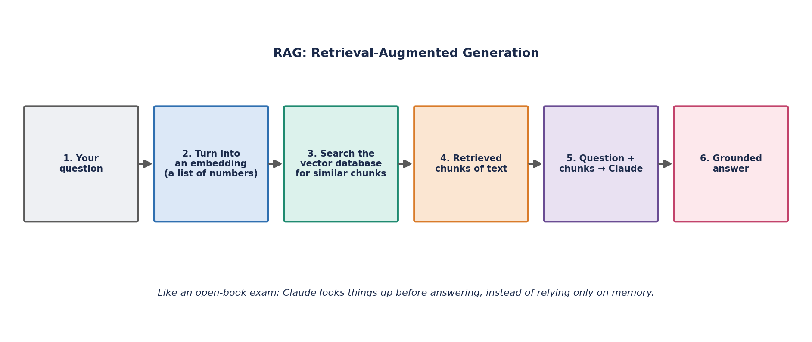

AI System Design (RAG & Embeddings)
Overview
Applied AI interviews increasingly focus less on model internals and more on how you'd architect a real system around an LLM: how to ground it in your own data, when to fine-tune versus prompt-engineer versus retrieve, how to evaluate quality, and how to keep the system fast and affordable at scale.
Designing a RAG Pipeline
Retrieval-Augmented Generation grounds an LLM's answer in relevant documents retrieved at query time, rather than relying solely on what was baked into its weights during training. A useful mental model: your company has a 500-page benefits handbook, and someone asks "how many sick days do new hires get?" Rather than guessing from general knowledge, RAG turns the question into an embedding, searches a vector database of handbook chunks for the closest matches, pulls back the 2-3 most relevant passages, and hands both the question and those passages to the model — which now answers using the actual policy text, and can even quote it. A typical production pipeline breaks this into six stages:

| Stage | What happens | Key design decisions |
|---|---|---|
| 1. Chunking | Split source documents into smaller passages | Chunk size (too small loses context, too large dilutes relevance), overlap between chunks, splitting on semantic boundaries (headings/paragraphs) vs. fixed token counts |
| 2. Embedding | Convert each chunk into a dense vector | Choice of embedding model, dimensionality, whether to embed queries with the same model as documents |
| 3. Indexing | Store vectors in a vector database for fast similarity search | Exact vs. approximate nearest neighbor (ANN) search, index type (HNSW, IVF), metadata filtering support |
| 4. Retrieval | Embed the incoming query and fetch the top-k most similar chunks | k (how many chunks to retrieve), hybrid search (combining dense vector search with keyword/BM25 search) |
| 5. Re-ranking | Re-score the retrieved candidates with a more precise (often cross-encoder) model | Trade latency for precision; typically re-rank a small candidate set (e.g. top 50 → top 5) |
| 6. Generation | Feed the top re-ranked chunks plus the query into the LLM as context | Prompt template, how many chunks fit the context window, citation formatting |
Why re-ranking matters: the initial vector search (bi-encoder) is fast because it embeds queries and documents independently, but it's less precise than a cross-encoder that jointly processes the query and each candidate document — too slow to run over the whole corpus but cheap enough to run over the retrieval's top candidates. Combining both gives good recall (from vector search) and good precision (from re-ranking) without paying cross-encoder cost on the entire index.
Vector Similarity
Retrieval ranks candidate chunks by how similar their embedding is to the query embedding. The most common metric is cosine similarity, which measures the angle between two vectors independent of their magnitude.
Ranges from -1 (opposite) to 1 (identical direction); most embedding models normalize vectors so cosine similarity reduces to a simple dot product.
Agentic RAG — the 2026 Twist
Plain RAG, as described above, retrieves once and generates an answer. Agentic RAG lets the model decide what to search for, evaluate whether the results it got back are actually sufficient, and issue follow-up searches — or even switch retrieval strategies (keyword, semantic, hierarchical) — before committing to a final answer. It's closer to how a person would research a genuinely hard question themselves: look something up, notice it's incomplete or ambiguous, and go look up the missing piece rather than answering from a single search.
This matters most on multi-step or ambiguous questions where a single retrieval pass is unlikely to surface everything needed — for example, a question that implicitly requires combining facts from two unrelated sections of a handbook. The trade-off is cost: each additional retrieval-and-reasoning round is another model call and another round of latency, so agentic RAG typically costs roughly 2-5x what a single-pass RAG lookup costs. It's a deliberate architectural choice for cases where accuracy on hard questions is worth the extra spend, not a strict upgrade you should reach for by default.
Fine-Tune vs. RAG vs. Prompt-Engineer
| Approach | Best for | Cost/effort | Limitation |
|---|---|---|---|
| Prompt engineering | Quick iteration, format/behavior control, few-shot examples | Lowest — no training, instant iteration | Limited by context window; can't teach genuinely new knowledge or skills reliably |
| RAG | Grounding answers in current, proprietary, or frequently-changing knowledge | Moderate — build/maintain a retrieval pipeline, no model training | Answer quality depends on retrieval quality; doesn't change the model's underlying reasoning style |
| Fine-tuning | Teaching a consistent style/format, domain-specific behavior, or compressing a complex prompt into model weights | Highest — needs labeled data, training infra, evaluation, and re-training as requirements evolve | Doesn't solve the "stale/missing knowledge" problem well since knowledge is frozen at training time; still needs RAG for current facts |
A common rule of thumb: reach for prompt engineering first, add RAG when you need grounding in facts the model doesn't (or shouldn't) have memorized, and only fine-tune when you have a persistent behavior/format/style requirement that prompting can't reliably achieve — and even then, RAG and fine-tuning are often used together rather than as an either/or choice.
Evaluating LLM Systems
Evaluation for generative systems is harder than classic ML because there's rarely one "correct" output. Common approaches:
- Retrieval metrics (for the RAG layer) — recall@k, precision@k, mean reciprocal rank (MRR) against a labeled set of query/relevant-document pairs.
- Generation quality metrics — faithfulness/groundedness (does the answer actually follow from the retrieved context?), answer relevance, and reference-based metrics like ROUGE/BLEU for tasks with a known target text.
- LLM-as-judge — using a strong LLM to score responses against a rubric (helpfulness, correctness, tone), which scales better than human review but needs its own calibration against human judgment.
- Human evaluation — the gold standard for subjective quality, typically sampled rather than run on 100% of traffic due to cost.
- Online metrics — task completion rate, user thumbs up/down, escalation rate to a human agent — the ultimate test of whether the system works in production.
Latency & Cost Trade-offs at Scale
Every stage of a RAG system adds latency: embedding the query, vector search, re-ranking, and the LLM generation call itself (which dominates total latency, especially for long outputs generated token-by-token). At scale, common levers include:
- Caching — cache embeddings for static documents, and cache full responses for repeated/similar queries.
- Smaller/distilled models — use a smaller model for latency-sensitive paths (e.g. re-ranking or simple queries) and reserve the largest model for complex requests.
- Streaming responses — stream tokens to the user as they're generated so perceived latency (time-to-first-token) is much lower than total generation time.
- Batching — batch concurrent requests on the inference server to improve GPU utilization and throughput, at the cost of some added per-request latency.
- Retrieval tuning — reduce k (fewer chunks retrieved/re-ranked) or use approximate nearest neighbor search to cut vector search latency, trading a small amount of recall for speed.